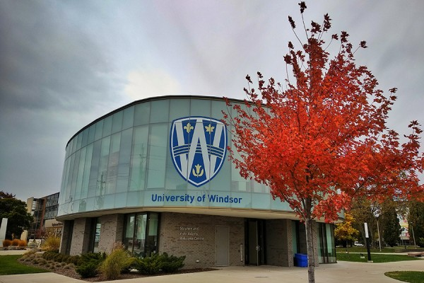

118 & 215 Essex Hall
University of Windsor
401 Sunset Avenue
Windsor, ON., N9B3P4, Canada
(519) 253-3000 x3587
Ambassador Bridge, Windsor-Detroit - Roonak Moasses, Master of Computer Science, Fall 2021
Fani's Lab! launched in 2020 at the School of Computer Science, University of Windsor, with generous support from the Natural Sciences and Engineering Research Council of Canada (NSERC), Canada Foundation for Innovation's John R. Evans Leaders Fund (CFI), Ontario Research Fund: Research Infrastructure (ORF), Mitacs, and Press'nXPress, performs research in the broad area of Social Network Analytics with special attention to temporal analysis and its synergy to Information Retrieval. Particularly, our research concerns user community detection, user interest modelling, team formation, information retrieval, text mining and machine learning.
Welcome Centre, University of Windsor - Sehajdeep Singh, Master of Applied Computing, Fall 2019
Fani's Lab! works with institutions, industry, and start-ups to advance AI research and drive its application across Canada. We attract and develop AI-ML talents to improve life for Canadians, and further establish ourselves as an AI-ML leader in the global community. We actively encourage and prioritize applicants from underrepresented groups such as students with disabilities or those who experience societal barriers and discrimination based on race, sex, or sexual orientation.
Embrace - Sculpted by Hans Schleeh, born in Germany and emigrated to Canada in 1951
Mahdis and Christine Birthday, Farinam Thanksgiving, CFI+ORF Grant Award, June 5, 2023. From Left Standing: Yoges, Reza, Gabriel, Hamed, Karan, Zahra, Roonak, Mahshad, Mohammad, Farinam, Hamed, Delaram. From Left Sitting: Christine, Arman, Nazia, Soroush, Mahdis, Hossein